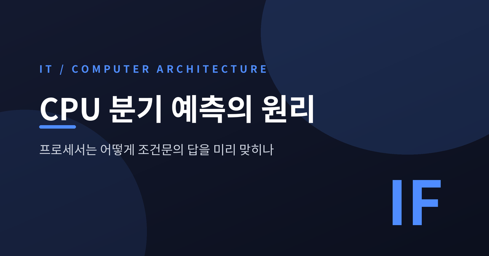
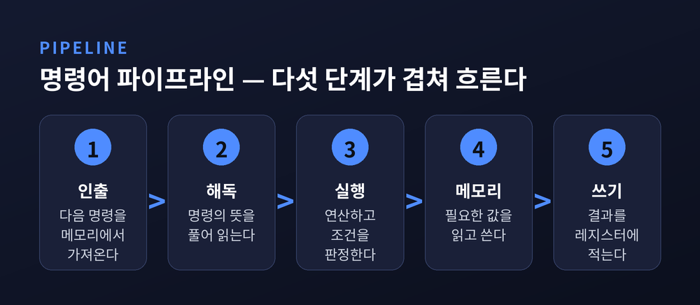
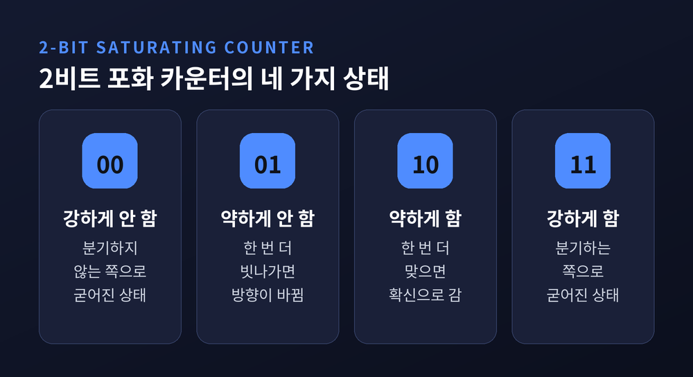
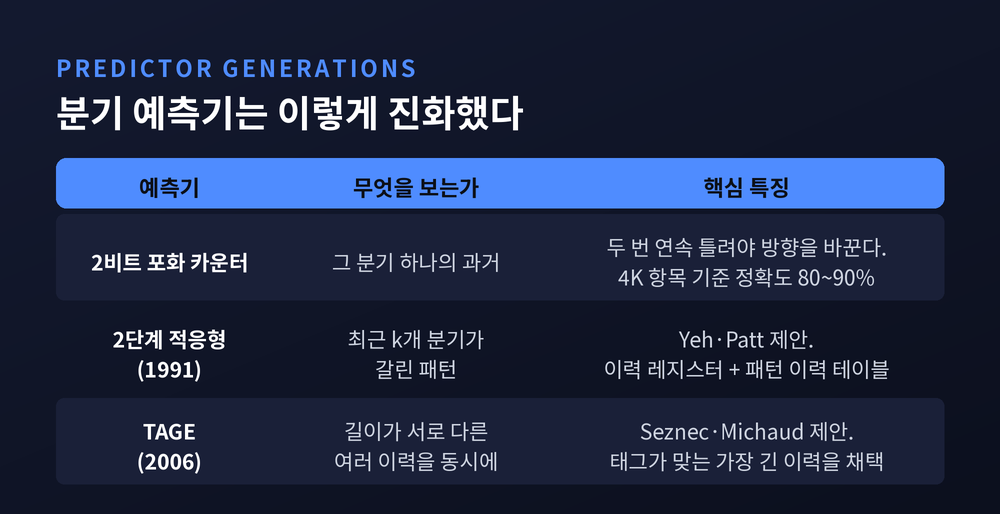
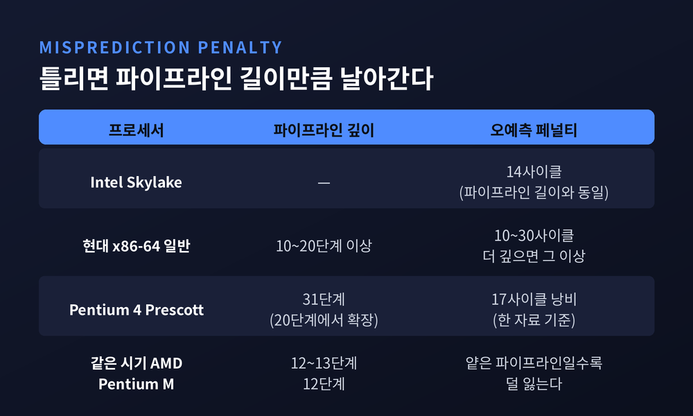
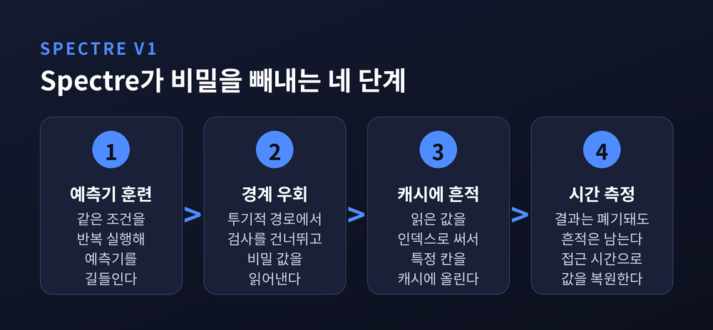

이번 글에서는 CPU 분기 예측이 어떻게 작동하는지 정리해 보겠습니다. 프로세서는 조건문의 결과가 확정되기도 전에 다음 명령을 골라 파이프라인을 채웁니다. 그 추측이 어떤 원리로 이루어지는지, 틀렸을 때 무엇을 잃는지, 그리고 그 추측이 어쩌다 보안 취약점으로 이어졌는지까지 차례로 따라가 보겠습니다.

현대 CPU는 명령어를 하나씩 완결해서 처리하지 않습니다.
인출, 해독, 실행, 메모리 접근, 쓰기. 이렇게 작업을 여러 단계로 쪼갠 뒤, 서로 다른 명령을 각 단계에 동시에 올려놓습니다.
공장의 컨베이어 벨트와 같은 구조입니다. 이것을 명령어 파이프라인이라 부릅니다.
단계를 잘게 나눌수록 각 단계가 단순해지고, 클록 속도를 높이기 쉬워집니다. 그래서 현대 프로세서의 파이프라인은 보통 10~20단계 이상까지 깊어졌습니다.
문제는 벨트가 멈추는 순간입니다. 벨트가 한 번 비면, 그 빈자리는 파이프라인 길이만큼의 시간을 잡아먹습니다.

벨트를 세우는 주범이 조건 분기입니다.
if 문 하나, 반복문의 종료 조건 하나. 이 결과는 파이프라인 뒤쪽의 실행 단계에 가서야 확정됩니다.
그런데 맨 앞의 인출 단계는 바로 다음 사이클에 "어느 주소의 명령을 가져올지" 결정해야 합니다.
답이 나올 때까지 기다리면 그사이 벨트가 텅 빕니다.
그래서 프로세서는 기다리지 않습니다. 추측하고, 그 추측을 사실인 것처럼 밀고 나갑니다. 이것이 투기적 실행입니다.
이 선택이 얼마나 중요한지는 연구자들의 평가로도 드러납니다. 분기 오예측과 데이터 캐시 미스는 현대 마이크로프로세서의 단일 스레드 성능을 제한하는 가장 큰 두 요인으로 꼽힙니다.
가장 기초적인 예측기는 놀라울 만큼 단순합니다.
분기 이력 테이블(BHT)을 하나 두고, 분기 명령 주소의 일부 비트로 항목을 고릅니다. 각 항목에는 2비트짜리 숫자 하나가 들어 있습니다.
이 숫자는 네 가지 상태를 가집니다. 00은 강한 '분기 안 함', 01은 약한 '분기 안 함', 10은 약한 '분기 함', 11은 강한 '분기 함'입니다.
분기가 실제로 일어나면 1을 더하고, 일어나지 않으면 1을 뺍니다. 다만 양 끝에서는 더 이상 넘어가지 않고 그대로 멈춥니다. 그래서 '포화(saturating)' 카운터라고 부릅니다.
이 구조의 핵심은 관성입니다. 한 번 틀렸다고 판단을 뒤집지 않고, 두 번 연속 틀려야 방향이 바뀝니다.
반복문을 떠올리면 이유가 분명해집니다. 천 번 도는 반복문은 999번 분기하고 마지막 한 번만 빠져나옵니다. 1비트 예측기라면 그 마지막 한 번에 상태가 뒤집혀, 다음 반복에 들어갈 때 또 틀립니다. 한 번의 예외가 두 번의 손해를 만드는 셈입니다.
2비트는 이 흔들림을 흡수합니다.
흥미로운 점은 이 '2'라는 숫자가 임의로 정해진 값이 아니라는 사실입니다. 1981년 Smith는 카운터당 1비트보다 2비트가 확실히 낫고, 2비트를 넘어가도 더는 나아지지 않는다는 것을 관찰했습니다. 실측으로 찾아낸 최적점이었습니다.
다만 한계도 분명합니다. 4K 항목 규모의 분기 이력 테이블에 항목당 2비트를 쓰는 구성은 대략 80~90% 정확도에 머뭅니다.

2비트 카운터는 "이 분기가 평소에 어땠는가"만 봅니다. 그런데 실제 코드에서 분기들은 서로 얽혀 있습니다.
앞의 조건이 참이었다면 뒤의 조건도 참일 가능성이 높은 경우가 흔합니다.
이 상관관계를 붙잡은 것이 2단계 적응형 예측기입니다. Tse-Yu Yeh와 Yale Patt이 1991년 11월 앨버커키에서 열린 MICRO-24 학회에서 발표했습니다.
발상은 이렇습니다. 이력을 두 층으로 나눕니다.
1층은 최근 k개 분기의 결과를 담은 이력 레지스터입니다. 분기가 갈릴 때마다 1비트씩 밀어 넣습니다.
2층은 패턴 이력 테이블입니다. "이 k비트 패턴이 최근에 나왔을 때 실제로 어떻게 갈렸는가"를 기록합니다.
한 분기의 과거가 아니라, 직전에 어떤 분기들이 어떤 순서로 갈렸는지라는 문맥 전체를 보는 것입니다.
이 논문은 이후 상용 예측기 대부분의 뼈대가 됐습니다. Pentium 4만 해도 16비트 전역 이력 버퍼를 갖춘 2단계 적응형 예측기를 썼습니다. 실측에서 24개 길이의 반복 패턴까지 알아봤을 정도로, 당시로선 앞선 설계였습니다.
여기서 자연스러운 질문이 생깁니다. 이력은 길수록 좋을까요.
그렇지 않습니다. 어떤 분기는 직전 몇 개만 보면 충분하고, 어떤 분기는 아주 먼 과거의 문맥이 있어야 맞습니다. 이력을 길게 잡으면 후자는 잡히지만 전자가 흐려집니다.
이 딜레마를 정면으로 푼 것이 TAGE입니다. 2006년 André Seznec과 Pierre Michaud가 JILP에 발표했습니다. 이름은 '부분적으로 태그가 붙은 기하급수 이력 길이(partially TAgged GEometric history length)'의 줄임말입니다.
구조는 이렇습니다.
기본 예측기 하나를 깔고, 그 위에 여러 개의 테이블을 올립니다. 각 테이블이 참조하는 이력 길이는 기하급수로 늘어납니다. 아주 짧은 이력을 보는 테이블부터 대단히 긴 이력을 보는 테이블까지 함께 둡니다.
각 항목에는 부분 태그를 붙여 "이게 정말 지금 이 분기의 기록인가"를 확인합니다. 태그 전체가 아니라 일부만 저장해 공간을 아낍니다.
예측할 때는 태그가 일치한 테이블 중 가장 긴 이력을 쓰는 쪽의 답을 채택합니다. 일치하는 것이 없으면 짧은 쪽으로, 끝내 없으면 기본 예측기로 내려옵니다.
성적은 압도적이었습니다. TAGE 계열은 분기 예측 경진대회(CBP)를 연달아 우승했고, TAGE-SC-L은 2016년 CBP-5에서도 정상에 올랐습니다.
수치로 보면 이렇습니다. 예측 성능은 보통 MPKI, 즉 명령어 1000개당 오예측 횟수로 잽니다. 64KB TAGE-SC-L은 같은 64KB 예산의 gshare 대비 평균 MPKI가 43% 낮았습니다.
정확도는 SPEC CPU2006 기준으로 까다로운 벤치마크에서 89.88~95.07%, 나머지에서는 92.94~99.56%를 기록했습니다.
지금 쓰는 대부분의 프로세서가 이 계열입니다. AMD Zen 2, ARM Cortex-A72, Intel Skylake 모두 TAGE 변형을 씁니다. Seznec은 2025년 CBP2025에도 TAGE-SC를 제출했습니다. 스무 해 가까이 같은 계보가 최전선에 있는 셈입니다.
다만 완벽에는 이르지 못했습니다. 64Kbit TAGE를 크기 제한 없이 무한정 키워도 MPKI는 3.986에서 2.596으로 줄어들 뿐입니다. 하드웨어 예산을 무한히 준다 해도 지워지지 않는 오예측이 남습니다.

예측기는 사실 두 가지 질문에 답해야 합니다.
첫째, 분기할 것인가. 둘째, 분기한다면 어디로 갈 것인가.
두 번째를 맡는 것이 분기 타깃 버퍼(BTB)입니다. 최근 실행한 분기의 주소와 그 목적지를 짝지어 저장해 두는 전용 캐시로, 보통 인출 단계에 놓입니다.
함수 복귀는 따로 다룹니다. 복귀 주소 스택(RAS)이 호출과 복귀를 짝지어 추적합니다.
함수 포인터나 가상 함수 호출처럼 목적지가 매번 달라지는 간접 분기는 또 다른 예측기가 필요합니다.
이 장치가 빗나가면 대가가 큽니다. Pentium 4 실측을 보면, 버블 없이 처리하던 범위를 넘어서는 순간 taken 분기 하나당 13사이클 이상이 들었고, 심한 경우 분기 하나에 36사이클까지 치솟았습니다.
예측이 틀리면 어떻게 될까요.
투기적으로 실행 중이던 명령을 전부 버립니다. 그리고 올바른 주소에서 다시 인출을 시작합니다. 이것이 파이프라인 플러시입니다.
날아가는 시간은 대략 파이프라인 길이만큼입니다. 벨트에 올려두었던 것을 전부 쓸어내고 처음부터 채워야 하니까요.
구체적인 숫자를 보겠습니다. Intel Skylake는 분기 예측이 빗나가면 14클록 사이클을 잃습니다. 파이프라인 길이와 같은 값입니다. 현대 x86-64 프로세서 일반으로는 10~30사이클 사이로 보며, 파이프라인이 깊으면 더 커집니다.
여기서 짚을 점이 하나 있습니다. 자료마다 수치가 조금씩 다릅니다. 무엇까지 페널티에 포함하는지, 어떤 방법으로 측정했는지가 달라서입니다. 그러니 "십수 사이클 규모"로 이해하는 편이 정확합니다.
99%를 맞혀도 남은 1%가 아픈 이유가 여기 있습니다.

파이프라인을 깊게 파면 클록이 올라갑니다. 대신 틀렸을 때 잃는 것도 함께 커집니다.
이 거래를 극단까지 밀어붙인 사례가 Intel의 NetBurst였습니다.
Pentium 4는 20단계로 출발했고, 90나노 Prescott 코어에 이르러 정수 파이프라인이 31단계까지 늘어났습니다. 같은 시기 AMD는 12~13단계, 모바일용 Pentium M은 12단계였습니다.
한 자료는 Pentium 4의 오예측 손실을 17사이클로 기록합니다.
Intel은 각 단계를 단순하게 만들어 클록을 끌어올리려 했습니다. 그 대가로 오예측에 훨씬 취약한 구조를 얻었습니다.
문제는 그것만이 아니었습니다. Agner Fog의 분석에 따르면 NetBurst는 잘못 인출한 명령을 리타이어 시점까지 취소하지 못했습니다. 쓸모없어진 연산을 끝까지 데리고 가야 했고, 그 손해를 메우려 내부 구조를 비정상적으로 크게 키워야 했습니다.
예전엔 클록 숫자가 성능의 얼굴이었습니다. 지금은 같은 클록에서 얼마나 덜 틀리느냐가 승부처입니다.
NetBurst는 실패한 아키텍처로 기록됐습니다. 다만 이 실패가 헛되지는 않았습니다. 트레이스 캐시는 훗날 마이크로옵 캐시로, 물리 레지스터 파일 기반 구조는 이후 설계의 표준으로 이어졌습니다.
여기까지는 성능 이야기입니다. 그런데 이 추측 구조에서 예상하지 못한 균열이 나왔습니다.
2018년 초 공개된 Spectre입니다.
구글 프로젝트 제로의 연구원 Jann Horn이 문제를 찾아냈습니다. 당시 그는 스물두 살이었습니다. 공개 예정일은 2018년 1월 9일이었지만 정보가 새면서 앞당겨 공표됐습니다.
영향 범위가 남달랐습니다. 특정 제품의 버그가 아니라, 1995년 이후 만들어진 상당수 프로세서가 공유하는 동작 방식 자체를 파고들었기 때문입니다.
취약점은 세 갈래로 정리됐습니다. 경계 검사 우회(CVE-2017-5753)와 분기 타깃 주입(CVE-2017-5715)이 Spectre, 악성 데이터 캐시 로드(CVE-2017-5754)가 Meltdown입니다.

Spectre의 첫 번째 변종은 이렇게 작동합니다.
먼저 공격자가 대상 프로그램의 분기와 같은 조건을 반복해서 실행합니다. 예측기를 훈련시키는 것입니다. "이 검사는 늘 통과한다"고 믿게 만듭니다.
그다음 경계를 벗어난 인덱스를 넘깁니다. 정상이라면 검사에 걸려야 합니다. 하지만 예측기는 이미 통과 쪽으로 기울어 있어, 투기적 경로에서 검사를 건너뛴 채 접근이 일어납니다.
이때 읽힌 값이 다른 배열의 인덱스로 쓰입니다. 그 인덱스에 해당하는 데이터가 캐시로 올라옵니다.
이윽고 예측이 틀렸음이 드러납니다. 프로세서는 결과를 되돌리고 아무 일도 없던 것처럼 정리합니다.
그런데 캐시에 남은 흔적은 지워지지 않습니다.
공격자는 배열의 각 칸을 하나씩 읽어보며 접근 시간을 잽니다. 유독 빠르게 읽히는 칸이 있다면, 그 칸이 캐시에 올라와 있었다는 뜻입니다. 그 번호가 곧 읽힌 비밀 값입니다.
핵심은 한 문장으로 압축됩니다. "투기적 실행의 결과는 되돌려지지만, 그 부작용은 되돌려지지 않는다."
두 번째 변종은 방향이 아니라 목적지를 노립니다. 간접 분기 예측기를 오염시켜, 커널이 공격자가 원하는 주소의 코드를 투기적으로 실행하게 만듭니다. 이후 복귀 주소 스택을 이용한 변종도 발표됐습니다.
대책은 나왔습니다. 다만 공짜가 아니었습니다.
Intel이 제안한 retpoline은 간접 분기를 예측기가 함부로 추측할 수 없는 형태로 바꿔 놓습니다. 비용은 워크로드에 따라 갈립니다. 네트워크 I/O에서 약 7% 성능 저하가 관측됐고, 스토리지 I/O에서는 거의 영향이 없었습니다. SPEC CPU 같은 연산 위주 벤치마크도 거의 영향을 받지 않았습니다. 커널을 자주 부르는 작업일수록 손해가 커지는 구조입니다.
IBRS 방식은 훨씬 비쌌습니다. Skylake에서 최대 24%, Haswell에서는 최대 53%까지 성능이 깎였습니다.
2022년 공개된 Retbleed의 경우 패치 오버헤드가 13~39%로 보고됐습니다.
완화 작업은 한 층에서 끝나지 않았습니다. 운영체제 패치, 펌웨어와 마이크로코드 업데이트, 하이퍼바이저, 브라우저와 자바스크립트 엔진까지 전 계층이 함께 움직여야 했습니다. 데스크톱과 노트북은 물론 서버, 스토리지, 스마트폰까지 대상이었습니다.
성능을 위해 만든 장치를 안전하게 쓰려고, 그 성능의 일부를 도로 반납한 셈입니다.
정리하면 이렇습니다.
분기 예측은 프로세서가 아직 모르는 답을 미리 적어내는 기술입니다. 2비트짜리 관성에서 출발해, 문맥을 읽는 이력 테이블을 거쳐, 여러 길이의 과거를 동시에 참조하는 TAGE에 이르렀습니다. 정확도는 99%를 넘봅니다.
그 정확도 뒤에는 두 종류의 청구서가 놓여 있습니다. 하나는 틀릴 때마다 날아가는 십수 사이클이고, 다른 하나는 되돌릴 수 없는 흔적입니다.
빠르게 만들려면 미리 움직여야 하고, 미리 움직이면 흔적이 남습니다.
컴퓨터가 똑똑해 보이는 이유가 무엇이냐고 물으신다면, 잘 맞히기 때문이 아니라 틀릴 것을 감수하고 먼저 움직이기 때문이라고 답하겠습니다.